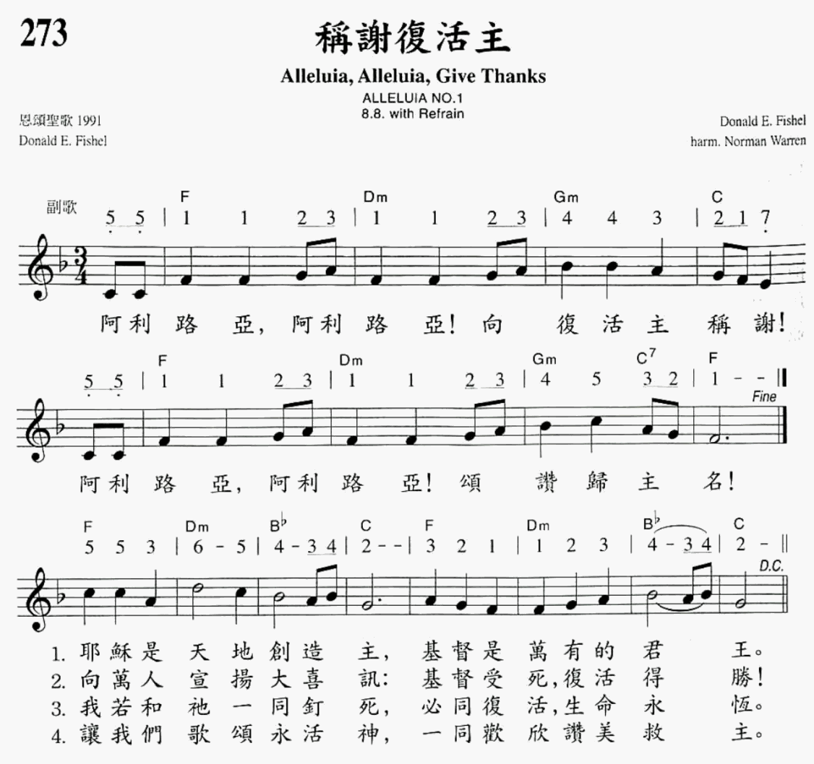

|
¡@ |
¡@ |
|
Chorus 1 |
¡@ |
|

|
|
|
¡@ |
¡@ |

-
Alleluia, Alleluia! Give Thanks
-
Alleluia, Alleluia! Give Thanks (Donald
Fishel)
0948
https://hymnary.org/text/jesus_is_lord_of_all_the_earth
Fishel,
Donald E., 1950-
［µü¡A¦±§@ªÌ］
https://hymnary.org/person/Fishel_D
Fishel graduated from the University
of Michigan School of Music in 1972. He has played the flute in a number of
orchestras, bands, and theaters. In 2008, he moved to Tennessee.
Alleluia, alleluia Give Thanks
ºÙÁ´_¬¡¥D
(UMH 162) - Donald Fishel
https://hymnary.org/text/jesus_is_lord_of_all_the_earth
¸Öºq½àªR¡G¡@History
of Hymns:¡§Alleluia, Alleluia! Give Thanks¡¨
by C. Michael Hawn
¡§Alleluia, Alleluia! Give Thanks¡¨Donald Fishel
UM Hymnal, No. 162
Alleluia, alleluia!
Give thanks to the risen Lord.
Alleluia, alleluia!
Give praise to his name. *
In the years following the Second
Vatican Council (1962-1965), Roman Catholic composers contributed many new songs
for congregational use in a variety of musical styles. The folk song style of
the 1960s and 1970s became very popular because of its fresh sound to
parishioners of this era, the accessibility of the guitar and the singability of
the tunes, especially for those unaccustomed to singing in the liturgy.
Among the songs of this genre that has
stood the test of time is ¡§Alleluia, Alleluia! Give Thanks¡¨ by Donald Emry
Fishel (b. 1950). Following good folk song practice, the refrain of his tune
ALLELUIA NO. 1 is easily learned and memorized after one hearing. The
accompaniment and even the key in which the song is written (E Major) are
perfect for the folk guitar, though most hymnals also make use of a piano
version as well.
Donald Fishel
Depending on the song¡¦s placement in the
liturgy, the stanzas may be sung by the congregation or a soloist. If the song
is used as an alleluia processional for the Gospel reading of the day or sung
during the distribution of the Eucharist, it may be better for a soloist to sing
the stanzas so that the assembly might participate more fully in the ritual
action.
Mr. Fishel, a freelance flutist, flute
instructor and composer, studied at the University of Michigan School of Music
under Nelson Hauenstein and Michael Stoune, graduating in 1972. He has performed
in a number of settings including serving as principal flutist with the Dexter
Community Orchestra in Dexter, Mich.
According to UM Hymnal editor, the Rev.
Carlton Young, Mr. Fishel joined the Word of God, a charismatic Catholic
community based in Ann Arbor, Mich., and was the group¡¦s music leader and
orchestral conductor from 1969 to 1981. He also served as publications editor
for the Word of God and Servant Music from 1973-1981, preparing musical
manuscripts and producing recordings.
In 1983 Mr. Fishel studied computer
science and became a systems programmer. In 2008 he moved to Nashville, Tenn.,
where he is again teaching flute after a hiatus of two decades.
¡§Alleluia No. 1¡¨ (1971) was his first song and, in the
composer¡¦s words, was written ¡§rather quickly, in about an hour. At first, there
were only four verses. I added [an additional verse] while I was preparing for
baptism: ¡¥We have been crucified with Christ; now we shall live forever.¡¦ It
seems to me to be a central idea of baptism, and I wanted it to be the center of
the song (the third verse of five).¡¨
The text embraces Pauline theology and
includes a creedal phrase from the early church, ¡§Jesus is Lord¡¨ (1 Corinthians
12:3; Romans 10:9) in stanza one. Stanza two contains the spirit of Matthew 28
following the resurrection of Christ, ¡§Spread the good news o¡¦er all the earth.¡¨
Stanza three employs a baptismal reference from Galatians 2:20: ¡§I have been
crucified with Christ and I no longer live, but Christ lives in me. The life I
now live in the body, I live by faith in the Son of God, who loved me and gave
himself for me.¡¨ (NIV) The final stanza of the four included in the UM Hymnal is
in an invitation to ¡§praise the living Christ.¡¨
Mr. Fishel¡¦s best known and earliest
songs, composed during his student days at the university, are ¡§Alleluia No. 1¡¨
and ¡§The Light of Christ.¡¨ These are widely available in several Christian
traditions, and can be found in Episcopal, Lutheran, Methodist and Roman
Catholic hymnals.
While the resurrection is a theme of
this song, it may be sung throughout the Christian calendar as each Sunday is
historically a ¡§little Easter.¡¨
* © 1973 The Word of God, Ann Arbor,
Mich. All rights reserved. Used by permission.
Dr. Hawn is distinguished professor of
church music at Perkins School of Theology. He is also director of the
seminary¡¦s sacred music program.